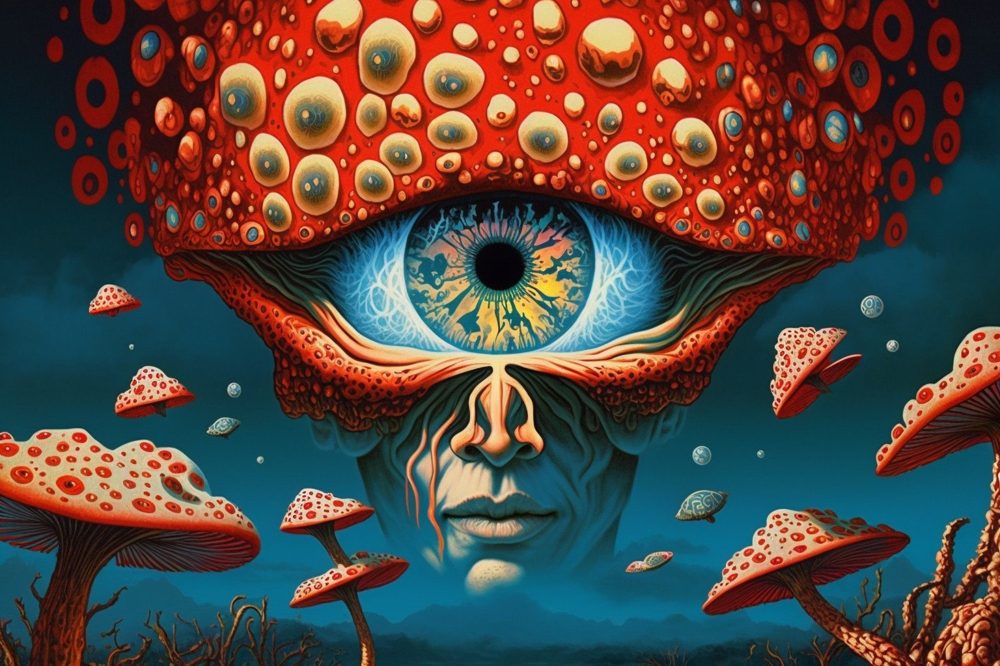

Трип репорт и мысли Мухоморного Просветления
Выдержка опус одного просветленца с ВК, насчёт его инсайтов с работой приёма мухоморов, наслаждайтесь.
АХТУНГ - Очень много текста и эзотерики!!!
Решил поделиться с почтенной публикой своими трёхлетними уже интимными заметками и заморочками связанными с мухоморной практикой. Предпочитаю, кстати, реже употреблять это вульгарное прозвище, ибо никакого отношения к травле мух этот царь грибов не имеет. Разве что можно говорить о тех грязных беспокойных навозных мухах, которыми битком набиты головы обывателей. Настоящее имя Аманиты Мускарии звучит как МАХ (великий) АМАР (бессмертный).
Итак, ты решил сойти с обыденного мирского ума. И правильно решил, ибо доколе?) Доколе можно страдать от того, чем необходимо наслаждаться? И Мах Амар – Великий Бессмертный поможет перейти от страдания к счастью лучше любого гуру.
25-35 г. сушеных (для начинающих 15-20) заедать 1 лимоном или запивать соком лимона с водой и сахаром + две-три долька чеснока. Это простейший способ употребления.
Либо рецепт кисломолочного экстрагирования, при котором получается та самая ведическая Сома: на 0.5 литра свежего коровьего или козьего молока (не магазинного, не порошкового) берем 30 грамм грибного порошка. Первый день взбалтываем каждые 2 часа. Затем перестаём болтать, оставляем при комнатной температуре, закрыв тканью.
Когда прокиснет и буроватая сыворотка отстоится, периодически шумовкой или ложкой осторожно погружаем вспенившиеся сверху грибы, не перемешивая творог и грибы с сывороткой. Через 3 дня процеживаем через плотную ткань в дуршлаге, затем нужно завязать ткань в узелок с помощью верёвки и поставить на ночь под гнёт, чтобы вышла почти вся жидкость. Всю полученную жидкость тщательно смешать с 35 мл мёда.
Выпить залпом на голодный желудок. По вкусу похоже на сладкий ржаной квас. По цвету тоже. Нет ни рвотных позывов ни тошнотворного послевкусия. Вхождение в сон мягкое и полностью осознанное, без опьянения, как при приёме сухих грибов. Трип после пробуждения глубокий, ровный, мягкий.
ОтВедать Сомы, значит стать Ведающим, в раз и навсегда распрощаться с неВежеством. Это самое важное решение в жизни. Обратного пути уже нет…
Итак. Первый раз это была инициатическая смерть. Хотя это всякий раз обнуление персонажа, т.е. смерть в одной реальности и рождение в другой, но первый раз, это именно инициация. И это незабываемо, хотя и очень бестолково из-за отсутствия опыта. Визуализации крайне неожиданные и бессвязные, но от того не менее удивительные.
12.10.2016. Гриб инициировал меня в такую глубину осознанности, о которой я мог только мечтать.
Я видел это:
Всё было как в той сказке – игла в яйце, яйцо в утке, утка в зайце, заяц в ларце… На выходе из мёртвого небытийного сна за несколько минут из кончика кощеевой иглы я стал яйцом. Весика писцес раздвоилась, как делятся бактерии под микроскопом. И потом деление пошло уже из тройственности в бесконечность.
Очень жаль, что не повелел жене записывать меня на диктофон.
Оказалось, что слова, речь и математические формулировки, первичнее образов! Это одно из сделанных открытий.
Второе достаточно банально для таких продвижуханых как вы. Оказалось, что Я - Бог и что всё сущее происходит из меня и не просто отделяется от меня, но остаётся частями меня, как отдельные фракталы в бесконечной фрактальной структуре.
Третье: материя управляема.
Четвёртое: наше тело, это жесткая привязка к созданному и создаваемому нами Миру, где феномены замкнуты через бесконечность на меня же… Наше тело, это якорь, который удержит нас в мире людей при любом самом глубоком погружении в иную реальность. Хотя, как выясняется, реальность всегда одна и та же и эта реальность – Я… Тем не менее, может показаться, что ты застрял где-то в кошмарном сюжете, и то, что ты обязательно вернёшься в исходную точку нужно зарубить себе на носу, чтобы не запаниковать во время возможного бед-трипа.
Т.е. если бы тело, в котором меня не было во время этой неклинической смерти было бы разрушено, я вновь родился бы уже в другом варианте действительности, или родился бы в этом варианте, но заново, или не родился бы вовсе, а просто стал бы тем, кем уже являюсь в параллельном мире, или в этом же, но другой совершенно личностью. Но я вернулся именно в тот вариант, в котором оставил своё тело и частью которого оно было.
Доза – 7 средних шляпок (примерно 25 г. сухого порошка). Заел яблочком, парой долек чеснока, запил водичкой. Дело пошло часа через полтора. Вход в трип начинается структурированием воздуха и пространства, появления дымки вроде муара на жаре, или прозрачного водяного пара, проявлением глубины в предметах, рисунков на поверхностях, но не в виде узоров, а как выделение отдельных фрагментов, их подвижность и перескакивание с места на место. Понимаешь фрагментарность восприятия, время становится прерывистым. Ноги становятся ватными, голова немного кружится, ощущение как при сильном опьянении, только без неприятных ощущений, сопутствующих алкоголю, и с сильным подъёмом настроения, как по обкурке. Но при этом сознание ясное, светлое, всё понимаешь предельно отчётливо, хотя слова начинают путаться. Затем после нескольких попыток лечь в постель, засыпаешь на диванчике в коридоре и проваливаешься часа на два.
Эти два часа ты полностью отсутствуешь. Ты умер. Тебя нет. Это совершенно точно и подтверждением тому твоё возрождение из небытия на выходе.
Очень интересен сам процесс распаковки реальности из сингулярности небытия.
Сначала появляешься ты, как таковой, как свет, созерцающий собственный источник – бесконечно малую чёрную точку. Это внешне выглядит, как будто ты проснулся. Уже есть слова, но ещё не знаешь, что с ними делать. Тела ещё нет, времени нет, пространства нет.
Потом появляется «яйцо»… Это уже самоосознание и первичное тело. И ты начинаешь дико радоваться собственной самодостаточности. Появляется первое слово «бог» и слово это у «бога». В моём случае слово было достаточно убого.))) Оно звучало как армянское «че» (нет, нету), или московское «чё», как вопрос и ответ одновременно. На санскрите, это некое связующее междометье, или союз.
Далее следует первый испуг: И чё?)))))) Чё с этим делать дальше?) Но одновременно счастье от того, что всё, что уже есть - чрезвычайно просто и ясно и не требует дополнительных объяснений. Ты самодостаточен. Ты самодостаточен. Ты самодостаточен…
Затем ниоткуда возникает понимание, что кроме меня во мне же есть ещё что-то, что я уже делюсь на «чё» и «че» и опять: Чё с этим делать? И снова ясность и самодовольство от ясности. Но снова уже следующий страх, уже из пробудившейся памяти: И это всё? Но в таком виде я полный бесполезный идиот, которого просто неминуемо сдадут в психушку… И ответ: Ждать.
И яйцо раскалывается на белок и желток – на Я и не-я…
И вот тут, снова неизвестно откуда, голос жены: «Что с тобой? Ты проснулся?»
И от яйца отделяется второе такое же, которое ты понимаешь, как говорящую часть себя, но уже самостоятельную часть, с которой приходится считаться. Ты кладёшь этот овальный предмет рядом с собой, вернее рядом с разделённым первояйцом внутри себя и…
И тут ты понимаешь, что существует ещё один компонент – необходимость общаться с собственными частями… А пространства по прежнему нет, хотя зачатки времени уже появились. (Кстати из этого вывод, что время первично, а пространство вторично.) И снова страх: Если я останусь в таком состоянии, я точно буду нежизнеспособен…
Но тут на колени прыгает собака и начинает целоваться и от первичного яйца отделяется ещё один овальный кластер, который ты после нескольких неудачных попыток тоже помещаешь вплотную к предыдущим и осознаёшь, что начал создавать, или разворачивать в себе целый мир, который впрочем, досконально понятен и абсолютно контролируем…)))
И появляется некое ещё незаполненное пространство-время, по форме напоминающее твою квартиру и ты с восторгом осознаёшь, что здесь есть ещё и говорящий какую-то херню телевизор, который становится очередным овальчиком, и не успев пристроить его на место ты вдруг понимаешь, или уже даже вспоминаешь, что в твоём распоряжении, или вернее под твоей опекой здесь внутри тебя находится целая, блин, планета… И что с ней делать?)
Ерунда, говоришь ты себе и с очередным восторгом осознаёшь, что всё под полным контролем, даже вся эта непонятно куда размещённая планета с женой, собакой, телевизором и видимо с континентами, осознаёшь, что ты уже достаточно прогрессировал, чтобы не дать себя посадить в психушку.)))
Всё это занимает пару минут… Которые проносятся как вечность. Именно проносятся и именно как вечность…
Затем проявляется часть тебя под названием жена с идеей дать тебе попить. Появляются зачатки зрения и некое подобие пространства в котором нет ещё пока ничего – только потенция и пустота. Больших трудов стоит организовать доставку воды в организм. При этом ты в абсолютной пустоте наблюдаешь, как часть тебя «жена», выглядящая как летающий проблесковый маячок, перемещает откуда-то издалека сгусток светящейся голубой энергии к тебе, а затем внутрь тебя, при чём ни кружки, в которой эта вода светящаяся, ни тел, ни предметов ты ещё не видишь – их просто ещё нет, ты их пока ещё не успел создать, да и не спешишь с этим.
Потом ты начинаешь что-то видеть, начинаешь ходить, попутно создавая формы и объекты, которые плодятся на твоём внутреннем мониторе, как равнозначимые и мало чем отличающиеся части тебя – всё те же овальчики, делящиеся как бактерии под микроскопом. И ты уже не следишь за их делением, но понимаешь, что все они внутри тебя и части тебя, подконтрольные тебе всецело. Картинка овальных кластеров тускнеет и исчезает.
И вот ты уже ходишь по комнатам, дотрагиваешься до вещей и они появляются. Ты охреневаешь от восторга и понимаешь, что ты не просто бог, а Творец. Что вся реальность внутри тебя, что ты и есть вся эта реальность, но ты волен изменять и разукрашивать её как хочешь. «Я бог, я бог!», говоришь ты себе, но в то же время начинаешь соображать, что всё, что тут есть, ты уже когда-то в будущем, именно в будущем, уже создал, запрограммировал и замкнул на себя же самого через бесконечность…
Прислушиваешься к бреду, который несёт мужик в телевизоре и пытаешься проследить цепочку творения… Ты создаёшь Вселенную, чтобы она создала планету, чтобы планете создала континент, чтобы континент создал на своей шкуре государства, чтобы они создали войну, чтобы война создала битву, чтобы битва создала солдат, чтобы один из них что-то начал втирать в прямом эфире другому… Гомерический хохот… )))))
А потом тебя тошнит в тазик, но ты не ощущаешь это как нечто неприятное, а напротив, как некий процесс пробного запуска системы, как некое тестовое действо, совершенно нейтральное и безболезненное. Потом требуешь, чтобы кто-то убрал тазик и просишь воду принести собаку жены (просишь жену принести кружку воды)…
Дальше постепенно возвращаешься в обыденность и ложишься поспать на часок, а потом уже встаёшь совершенно без последствий, с чистой ясной головой, прекрасным настроением.
После пробуждения от смерти и до полного возвращения в обыденность и второго пробуждения где-то часа три. И в процессе этого очень много ещё других мелких откровений, вроде того, что залезть в голову кошки и начать управлять ею оказывается гораздо проще, чем дойти до туалета, и т.п., которые забываются или кажутся несущественными со временем, но меняют тебя навсегда…
Лизергин отдыхает…
Канабис курит за углом.
Алкоголь - просто говно под ногами…
Кстати, про алкоголь всё понял от и до. Алкоголь это хуже всего, что вы можете себе предложить…
Вообще ясность и незасорённость мозгов потрясающая.
В общем это то, к чему я шел всю жизнь.
Впрочем, к любому этапу мы идём всю жизнь.)))))
Но это великолепно как ни что другое и по всей видимости это не один из проходных этапов, а действительная и окончательная истина Аз Есмь…
Однако без философского образования и соответствующей подготовки это просто запретная тема. Поэтому советую для начала разобраться с тем, чего ты хочешь от гриба. Если ты хочешь веселухи, кайфуши, отрыва, торчмы – тебе не к Великому Бессмертному.
Можно напугаться до катастрофической паники и вообще остаться идиотом. Лучше кури траву, бухай и вообще иди лесом. Мах Амар, это духовная практика, а не развлекаловка. Это ведический Шаманизм в чистом виде и великая ответственность. То, что испытываешь на пике сильного глубокого трипа от большой дозы, есть ни что иное, как то самое Самадхи, или хотя бы Сатори. Получение этого опыта без соответствующей подготовки и ответственности, это наказуемое воровство…
И необходимо присутствие рядом бодрствующего и понимающего - ситтера, а лучше коучера. В идеале – опытного шамана. Чтобы уберечь от неадекватных действий на входе и не отдать в руки медицины на выходе.) Выход реально со стороны выглядит как полнейшее безумие.
Когда распаковываешь реальность отдельными кластерами из точки и при этом сам себе это комментируешь глумливым человеческим языком, да ещё и пытаешься двигаться, со стороны это выглядит чудовищно.
Если перед сном или после него тебе удастся собрать собственную мочу, то потом, выпив её, ты повторишь трип, но уже в разы сильнее. Такая вот шаманская уринотерапия.)
И вот какие выводы. Не для всех. Торчкам можно не читать.)))
Мы состоим из того, что мы вдруг существуем, из того, что мы стремимся стать собой, и из того, что, оказывается, мы уже есть… А-У-М. Гегелевская триада. Триада в действительности являющаяся одним единственным мгновением вечности, вечности, умещающейся в этом мгновении. Наша суть - Любовь, выражающаяся в вечном желании воссоединиться с самим собой, несмотря на то, что никого помимо нас самих нет. То есть Любовь, это желание желать… И для того, чтобы реализовать свою Любовь, мы создаём внутри вечного мгновения время, разделяющее нас с самими собой, простирающееся между тем, что мы есть и тем, что мы… опять же есть.
Любое желание, которое мы испытываем в нашей иллюзорной жизни, это искромётное отображение, моментальное проявление стремления к тому, что ожидает нас на другом конце вечности - к самим себе. Всякое намерение есть стремление к единению. Всякое удовлетворение есть наслаждение воссоединением. Однако, шутка игры в том, что мы уже изначально едины с самими собой, соответственно самому факту своего бытия, и все наши желания и стремления, мечты, страстные влечения и решительные намерения по сути своей уже удовлетворены. Желание уже содержит в себе удовлетворение и только иллюзия времени отделяет нас от экстаза.
И тут в нашу жизнь врывается ощущение текущего момента. И мы обнаруживаем, что всего лишь осознание того, что мы есть, делает нас счастливыми раз и навсегда, бесповоротно и вечно.
Странно, что бесконечный вечный оргазм ближе к нам, чем наше собственное дыхание.
Время создаёт скорость, скорость создаёт ускорение, ускорение замыкается на вечности. Всё существующее состоит из движения, из скоростных вибраций, из ускорений потенциалов. Разница между вещами, это разница скорости. Таким образом соединение, это сложение скоростей, разъединение, это деление скорости. Зло, это попытка повернуть ускорение вспять, это невежество относительно изначального АУМ. Страх, это замедление ускорения, а ложь, это выдача одной скорости за другую.
25.10.2016. Между уровнями реальности – микромир, макромир, гипермир и т.д., существуют принципиальные вибрационные мембраны, скоростные барьеры. Преодоление такого барьера – ключ к управлению реальности.
Есть только ты, появившейся как ошибка и ставший правилом. Правило гласит: АУМ, Я ЕСМЬ. И каждое мгновение жизни ты наслаждаешься воссоединением с собой, которое уже произошло в прошлом и будущем…
Вещества этого священного гриба срочно нужно выделять и синтезировать в тех же пропорциях, в каких они есть в сушеных грибах. Действующих веществ там много и они действуют в строгой взаимосвязи. Это невероятный ключ к пониманию реальности. Это Само Ведение. Не только в плане Ведать, но и в плане Вести… Хотя мне-то без надобности.) Я как-нибудь по старинке.) На простоквашке.)))
Но, должен сказать, эффект “трендец котёнку” это не сказать ничего…
Страшновато? Страшно, это не то слово…
Но одномоментно с ужасом и мраком беспредельный Свет и беспредельный экстаз.
14.11.2016. Полнейшая расшифровка реальности. И видимо гораздо мягче и вместе с тем глубже, чем аяваска. Если там открывается структура и планы Бытия, то здесь обнажается Сам Источник Бытия, сжигая все страдания и бессмысленные вопросы.
Распад реальности на элементы, это семечки.) Он происходит не через потерю осмысленности, как под псилоцибином, а через потерю памяти о смыслах. Потом ты засыпаешь, а вот по пробуждении ты рождаешься заново. Представь себе новое рождение из небытия, при этом ты пребываешь в полном адеквате, наблюдая и констатируя ускоряющийся процесс изнутри… Практически неописуемо и совершенно не имеет аналогов в повседневной практике. Лишь годы медитации могут дать хоть сколь-нибудь подобный результат.
При чём распад является одновременно восхождением к высшим смыслам простым до гениальности.
В конце восходишь к единому смысловому восторгу. Полное вечное счастье и бесконечное могущество. Свет, Любовь, неописуемое Единство уже (ещё) без многообразия.
Это До сна. А после сна из этого неописуемого экстаза безграничного блаженства и чистой Любви с ускорением возвращаешься к фрагментации, а затем к привычной картине мира, но уже с непривычным осмыслением не снизу вверх от простого к сложному, а наоборот, при чём самое сложное оказывается самым простым и наоборот. В общем безумие для неВедающего.
И тут всё зависит от твоего предварительного настроя и настроения и от подготовленности и позитивности наблюдателя, чьё присутствие необходимо.
Вообще никаких нагрузок на организм нет. Ни до ни вовремя ни после. Давление, сердце, печень, почки, желудок – всё в норме. Только в начале, когда кровь начинает сильнее обслуживать мозг, что, кстати, для мозга крайне полезно, может быть небольшой озноб. После завершения действа последующие сутки – двое чувствуешь себя как после хорошего краткосрочного отпуска где-нибудь на островах.
Однако есть большая опасность. При скверном состоянии души, при негативе сознания, при паршивом воспитании и низком культурном уровне почти гарантированы тюрьма или психушка. Нельзя общаться с Великим Бессмертным если ты угнетён, озлоблен, или испытываешь страх. Ты проходишь бесконечную череду реальных возможностей получить на выходе совершенно не ту вселенную, которую покинул. Вечное безграничное страдание и т.п. кошмарные сценарии не исключение. Хотя, так же не исключено и попадание в вечный оргазм, или иные формы благого идиотизма.))) И ты реально это проживаешь. Компот тот ещё. Представить это невозможно. Остаётся только представление о том, что это вовсе не галлюцинации, а реальные ветви фрактала. С каждым разом процесс выхода всё более осознанный, но всё более ответственный. Недели на осмысление уже не хватает. Всё больше времени нужно на подготовку. И это всё больше напоминает профессиональную деятельность… Шаманизм… Саманизм (индийский вариант). Вот что значит питие Сомы.
Алкоголь стирает полученные навыки благовосприятия. Вот и думай, кому и почему он выгоден…
Никотин совершенно ни на что в последствии не влияет.
Нужно людям учиться дарить, отдавать, не иметь привязанности. Стремление к Свету, к Самому Себе, это эволюция. Достижение Света, это Ты в настоящем моменте. Каждый миг у тебя есть шанс достичь божественного пробуждения, просветления и излучить этот Свет, отдать себя Миру. Но мы либо тупо продолжаем стремиться к тому, что уже есть, либо (последнее самое страшное) поймав просветление поворачиваем вспять и тормозим ускорение Мира, пытаясь зафиксировать своё превосходство за счёт деградации остального Мира.
Именно так и поступают те, кого я называю манипуляторы. Это высшая степень невежества, присущая существам уровня Демиурга.
22.12.2016. После длительного перерыва еле-еле впихнул в себя снова нужную порцию грибов. Очень тяжело шел процесс поглощения, последние пару чайных ложек даже не осилил, возможно, они были лишними. Гриб сам знает когда и сколько…
Это было просто потрясающе. На выходе из сна оргазм всего тела в течении минут 20, происходящий от ощущения Я-ЕСМЬ (ॐ). Ясность, однозначность и благость мысли настолько зашкаливают, что помираешь от удивления тому, как всего этого можно не понимать, как можно жить в т.н. реальности на полном серьёзе и без попыток осознания и предосознания… Параллельно слушал Махарши. Совпадение 100%.
Если можно, находясь в иллюзии, мечтать и говорить об Истине, то это именно она. И это самый высший из доступного экстаз, кайф, оргазм, наслаждение, восторг и всё такое.) Реально. Физически.
9.01.2017. Долго не хотел снова браться - препарат сухих грибов казался грязным, вонючим, тошнотворным, однако потом пожалел только о том, что всё хорошее быстро заканчивается.) А ведь прикиньте, сами грибы, они в этом состоянии всё время находятся (!!!!!!!!!!) …
Вот к чему надо стремиться, о чём мечтать и чем заниматься. Всё остальное - фуфлярное фуло-фуфлище!!!)))))))))))))))))))))))))
Истина Я-ЕСМЬ (ॐ), это Бесконечно малая вневременная точка из которой и внутри которой расцветает иллюзия Эго-Сознания. Мы сами являемся и причиной окружающей нас иллюзии и её творцами и, всем тем, с чем себя начинаем отождествлять в любой отдельно взятой ветви реальности (иллюзии).
Можно бесконечно скакать с уровня на уровень, с ветки на ветку, как обезьяна за новым и новым бананом, а истина всегда будет оставаться не снаружи, а внутри.
Только самоисследование и возвращение к центру сущего - к самому Себе, к состоянию, предшествующему АУМу, лежащему в основе пространства, времени и всего бытия, может помочь решить проблемы, которых на самом деле не существует. Попытки же манипуляций в восходящих потоках разветвляющейся майи всегда привносят диссонанс в общую красоту игры.
Восхищённые крики (пусть даже молчаливые) о собственной просветлённости подобны саморекламе палача. Мол, живёте вы все как слепые щенки, счас я вам тут всем армагеддон устрою, освободитесь, будете счастливы, ведь я-то знаю уже, вижу всё с высоты следующего уровня!
Что делать с людьми, которые спят в своей кошмарной иллюзии и не видят иного выхода из матрицы, кроме разрушения, - спрашивал я у грибов. Вернее, конечно, не у грибов, а у себя любимого. Ответ был очень, как теперь кажется, замысловатый, а тогда очевидный и не требующий разъяснений, исходящий из самой сути бытия, т.е. из самосущей реальности:
Ты лишь тогда видишь и чувствуешь других людей, события, вещи, когда они доставляют тебе радость, когда они любимы тобой, когда ты счастлив с ними. Если счастья не поддерживается присутствием человека, или вещи, их нужно стереть, убрать, отдалить из поля зрения. И они удаляются и не поддерживаются твоим вниманием, а значит не существуют уже, а лишь в воспоминаниях и предположениях. При этом нельзя допускать грубого отстранения с разрывом связей внутри континуума, нельзя ломать, рвать, резать по живому.
Нежелательным ситуациям, как и неинтересным, агрессивно настроенным людям, нужно давать возможность забыть о тебе, пройти через тебя, как через пар, оставив им лишь воспоминание о том, что можно быть другим, что благодать где-то рядом, что всё не так прямолинейно и не так безобразно, как им кажется. То же и с негативными злыми мыслями, поступками, направлениями действий – нужно просто не поддерживать их, не кормить своим вниманием. Зло не просто нереально, а его просто нет вообще. Когда тебе кажется, что оно есть, это просто твоё непонимание самосущего добра – самого Себя.
Наложение ветвей и уровней иллюзорной действительности в неких точках пересечения и соприкосновения рождают т.н. зло, которое есть лишь мучительное рождение новых почек всё тех же ветвей. Давая жизни цвести и разветвляться, доверяя красоте её гармоничной фрактальной структуры, ты доверяешь самому себе, любишь Себя изначального, наслаждаешься бытием как чудом, искореняешь зло простым понимаением его нереальности.
Как это всё применить в отношении диких, невежественных людей, окружающих тебя в твоей конкретной телесной жизни, особенно в отношении тех, кто ненавидит тебя и желает разрушить твою жизнь, твою иллюзию, твою реальность, растоптать, поработить, расчелнить, купить и продать? Очень просто.
С ними не нужно общаться как с реальными персонажами, но смотреть на них, как на свои отражения в зеркале собственного сознания, и не пенять на зеркало, мол, криво, а стараться в любой непонятной ситуации возвращаться к Себе, вновь и вновь от вопроса «Кто Я?», переходить к тому, кто вопрошает.
Любой возникающий вопрос путём логических трансформаций следует сводить к вопросу «КТО Я?», переходя затем от вопроса к самосущему вопрошающему. Проще говоря, на любой вопрос нужно отвечать ДА! ДА – нужно говорить всему и всем. Никаких НЕТ не должно быть. Но невозможно искоренить отрицание отрицанием. НЕТ можно изжить лишь при помощи ДА. Ибо согласие реально, а отрицание иллюзорно.
Сложно это понять будучи уверенным, что Ты, это кто-то, или что-то. Мы пытаемся смотреть на себя со стороны и видим лишь иллюзию, разрастающуюся в многомерную фрактальную проекцию нас в нас же самих…
В общем это то, что называется САМАДТХИ.
САМАДХИ, САМХИТА, САМОСТЬ, СОМА – однокоренные слова. САМАНИЗМ (Шаманизм) тоже.
Да, многие об этом говорят. Но когда это реально видишь, чувствуешь осознаёшь….
Вообще, конечно, это что-то невероятное. Непосредственное ощущение Себя, как единственно сущего в чистом и неделимом виде, без мыслей и репродукций, без наблюдаемого и наблюдателя… Это вообще непередаваемо. Когда оказывается, что ты сам и есть весь кайф, который только возможен, сконцентрированный до сингулярности и помноженный на бесконечность…
И здесь в приятии МАХ АМАР – Великого Бессмертного, проявляется высший гуманизм. Приходит однозначное понимание того, что человек, чью роль ты играешь конечен, но Сам Ты Бесконечен и беспределен. И это не последовательная вульгарная цепь перерождений, а непрерывный континуум. Все живые существа в настоящем, прошлом и будущем, во всех временах, измерениях и во всех вселенных - это Ты. И само собой разумеющимися оказываются непротивление, недеяние, непричинение вреда.
Необыкновенно понятными и проникновенно близкими оказываются и проповедь Христа «Вы – боги», «Я и Отец – Одно» и Бхагавад-Гита и суфийское «Я утратил себя и, О! Я стал Им!»…
25.01.2017. Любые психоделические препараты, из которых Аманита является самым радикальным и вместе с тем самым безвредным для организма, это искусственное снятие естественных животных блокировок мозга. Эти состояния не могут быть бесконечными. Но они показывают нам путь к Истине и тренируют мозг в нужном направлении. Следует сознательно привносить просветлённость из трипов в обыденное мышление, стараться осмыслять то, что дают грибы и закреплять впечатления изучением философии, психологии, мифологии и самоисследованием.
Один махамарный трип заменяет годы медитации, но не даёт устойчивого эффекта. На формирование устойчивых синоптических связей и глубинную трансформацию сознания всё равно требуется время и усилия, а так же систематическое повторение практики.
Из любого психоделического трипа вы возвращаетесь после окончания действия психоактивных веществ. Вопрос только в том, в каком качестве вы возвращаетесь. Здесь важнейшую роль играет предварительная подготовка и цели, которые вы перед собой ставите, принимая вещество. Нужно отдавать себе отчёт в том, что это не игрушка, не развлекуха, что это не имеет ничего общего с наркотическим опьянением, а является инструментом для серьёзной и ответственной работы над собой.
Грубо говоря, если человек мудак, то он может только усугубить свою глупость и вообще стать идиотом, но если в практике задан верный духовный вектор, вы будете неизбежно и интенсивно продвигаться к самореализации.
Разовый опыт тут не прокатит. Он скорее всего будет бесполезен, как и слишком малые или слишком большие дозы. Для осознания нужно повторить хотя бы три-четыре раза. При том можете не переживать о зависимости - она не возникает. Вред физическому здоровью практически отсутствует, если не считать шишек, набитых по неосторожности.
Чтобы говорить об отделении души от тела, нужно понимать, что такое душа. Правда в том, что душа, это механизм которым мы пользуемся, а не мы сами. Этот механизм состоит из семи неразрывных частей, одной из которых, как не парадоксально это звучит, является тело. Рассматривать тело, как оболочку души неверно. Скорее уж более высокие части души, такие как Дух, Сознание, Разум, являются оболочками для тела. Но вообще, это неразрывный конгломерат, о котором некорректно говорить как о последовательной матрёшке.
Действующие ПАВ (психоактивные вещества) МахАмара дают не отделение от тела и не отделение от души, а непосредственное самоосознание Того, что является пользователем всех тел и всех душ в интерактивной игре под названием Майя.
Вот что действительно возможно и что выходит за грань обыденного понимания, это управление физической реальностью в махамарном трипе. После нескольких сессий вы сможете переживать реальный опыт физической левитации, трансформации пространственно-временного континуума, изменения собственной судьбы и т.п. Это невообразимо для обычного человека и звучит как безумие, но это так.
Есть документально зафиксированные свидетельства наблюдений за шаманами, которые не укладываются в привычные парадигмы. Одно то, что ни вам ни вашим “трезвым” помощникам ни при каких обстоятельствах не удастся полноценно зафиксировать ваш трип с помощью технических средств - фото, видео и аудио записи - убедит вас в том, что бытие устроено совсем не так, как нам это объясняет наука, религия и общественное мнение.
Сушить нужно правильно. Над горячей плитой, или в духовке, но чтобы не запекались. t 40-60 градусов. При слишком слабой термообработке остаётся нетрансформированной иботеновая кислота, вызывающая сильную рвоту, а при слишком сильной термообработке все действующие вещества разлагаются.
Хранить порошок лучше в герметичной упаковке в морозилке. Иначе происходят реакции по разложению действующих веществ. При холодной сушке например на солнце, употреблять ранее чем через 3-4 месяца не рекомендуется.
Для глубокого трипа людям с устойчивой психикой и здравым умом, рекомендую дозу в 35 грамм сухого грибного порошка - приблизительно 100 миллилитровая ёмкость порошка. Запивать соком двух лимонов в воде с сахаром. Сахара немного. Предварительно следует соблюдать трёхдневный пост - кашки на воде, сырые овощи соки. В день сессии с утра два стакана воды и в обед можно есть гриб.
При использовании кисломолочного экстракта (Сома), для вхождение в Самадхи дозу можно удвоить.
Избегайте посторонних людей, высоких этажей, водоёмов, автомобильных и ж\д дорог.
Желательно присутствие понимающего трезвого человека.
В первые пол часа- час могут быть рвотные позывы, которые нужно уметь побороть. Через 1,5 -2 часа засыпаете, спите 1-3 часа, просыпаетесь в трипе.
Ещё раз обращаю внимание, что чрезвычайно желательно иметь позитивный настрой, опыт медитативной практики, запас психоделической музыки без тыц-тыц-тыц. Музыка должна сопровождать всё время сессии. Так же благотворным фоном будет поставленная на реверс запись хорошего прочтения боговдохновенных текстов, таких например, как «Сутра Дождя» Ильи Беляева, или «Большая касыда» в исполнении Никоши.
Счастья Вам.
17.03.2017. К сожалению не пробовал аяваску, потому только, что она у нас под запретом, а мы тут собрались люди законопослушные… )
Но судя по описаниям и компетентным исследованиям, аяваска гораздо тяжелее в физическом и психическом плане и всё же МахАмару проигрывает во многом.
Я уверен, что сами вещества МХМ на мозги действуют не очень-то. Ну, примерно как алкоголь, только без оглупления и без похмелья. Но при достаточной дозе Сома провоцирует выработку эндогенного ДМТ шишковидной железой. В этом и суть.
Шишковидная железа (третий глаз, или, как называли древние славяне, вежды) активизируется в трёх случаях - у детей во время рождения, у женщин во время родов (не сильно и не всегда) и в момент умирания мозга (клиническая смерть и просто смерть). Так же её можно активизировать при длительной медитации, но это слишком трудно и редко у кого получается. Есть люди, которые имеют некую особенность и у них с рождения вежды не затворяются совсем, а в период гормонального созревания отворяются полностью и на всю жизнь.
Это святые. Таким были например Рамана Махарши и Рамакришна.
Сома же открывает вежды любому. И тут встаёт вопрос готовности увидеть То, что Есть на самом деле…
Потому и цивилизация, основанная на употреблении Сомы, назвалась ведической. От слов Ведать, Веденье и Вежды. А не от слова Веды, хотя слова однокореные.
Не на индийских Ведах основана ведическая цивилизация, а индийские Веды основаны на ведической культуре.
Веденье, это не знание, как принято считать, и не вера и не интуиция и даже не осознанность. Веденье ближе к виденью, но и это не точное сравнение. Это не виденье основы Бытия, а Становление основой Бытия…
Короче, это надо испытать.
Это конечная цель эволюции и самопознания. Это состояние называется Самадхи. Или по русски Самоведенье.
Представьте себе культуру, основанную на употреблении Сомы, где саманы (шаманы) были главными авторитетами, где с детства люди знали цель и смысл Бытия, где Любовь была единственным мотиватором, счастье – нормальным состоянием и люди, заканчивавшие свою жизнь в неВежестве были редчайшим и досадным недоразумением…
Это было. При том на протяжении СОТЕН тысячелетий… И лишь недавно было утрачено по причине какой-то климатической катастрофы 4-6 тыс. лет назад, когда МахАмар перестал расти в южиных густонаселённых регионах… Его заменили наркотиками и алкоголем и естественная варновая система общества была нарушена, появилась рабовладельческая СИСТЕМА, в которой мы до сих пор и пребываем…
Эволюция человека отнюдь не завершена. Мы являемся переходным звеном от обезьяны к святости. Наш мозг - результат миллионов лет симбиоза с психоделиками. И лишь недавно этот процесс дал сбой - МХМ перестали расти в средиземноморье, Египте, Персии, Индии (в Индии продержались дольше всего) и естественная ведическая культура там угасла, появился феномен власти, появилось рабовладение, возобладало невежество и винопитие, появились дуалистические религии, наследственные кланы рабовладельцев и прочая мерзота.
Сегодня у нас есть уникальный шанс вернуть всё на свои места. Если Люди узнают о том, что такое Сома, Соманизм (Шаманизм), свяжут это с понятием Веденье, произойдёт та самая революция духа, которая не удалась в 60-70-х в Америке. Теперь она должна начаться В РОССИИ! На Родине Ведической культуры.
Можете положить мои слова в банк.
4.11.2018. Вспоминая и анализируя последний опыт духовной практики запредельного состояния Сознания, близкого к тому, что мы невежественно считаем смертью…
В общем есть что-то, некая сфера, где уже нет самого понятия Я. Оно там не нужно, потому, что нет ничего, что можно назвать “не-Я”. И в то же время нельзя сказать, что это небытие. Потому, что Это Есть. Вот словом Есть, или присутствие, это и можно охарактеризовать.
Это нечто незыблемое и совершенное. Нечто самосущее и не нуждающееся ни в чём. Это выше всего, что я знал. Это не Свет, но и тьмой это не назовёшь. Выше Света, выше Бога, выше Меня, выше Вечности, выше Беспредельности. Это сфера Всевышнего. Хотя слово сфера не подходит, потому, что нет там ни пространства ни времени ни протяженности. И вообще нет никакого “там”…Это здесь и сейчас и одномоментно нигде и никогда. Это точка и мгновение… И всё же это Я. Хотя и не нуждается в самоопределении.
Это То, о чём суфии, маги и йоги говорят загадками и намёками. Нети-Нети (не то и не это) Тат Твам Аси (То ты еси) и это выше, чем Сат-Чит-Ананда (Бытие-Сознание-Блаженство).
19.11.2018. Есть единственная точка Я, точка ноль, и больше ничего. Потому просветление так похоже на сумасшествие.
Либо ты ум успокоил, либо он пульсирует.
Ум, это бешеная собака, которую нужно загнать в угол и укротить.
Секрет Сомы – попадание в точку абсолютной реальности, из которой произрастает лотос Сознания.
Есть одна Единственная точка. Есть одна единственная вещь, которую нужно сказать, которую НУЖНО понять. Есть одна единственная песня, которую нужно пропеть.
Понимание этого и есть НИРВИКАЛЬПА САМАДХИ. АБСОЛЮТНОЕ, НЕДВОЙСТВЕННОЕ САМОВЕДЕНЬЕ.
И это понимание и есть Счастье. Это и есть То, что Есть.
И это и Есть То, что Есть. Ты и есть эта точка абсолютного покоя. И ВСЁ. И больше нет ничего.
И это и есть Счастье.
И это у Тебя Уже Есть. И не нужно ничего искать, стремиться, освобождаться – все такие попытки есть лишь накопление мусора. Смой всё, чем обгадила твой дом бешеная собака ум. И её из шланга окати заодно. Пусть остынет.
Стремись к Себе. Люби Любить.
Просто Будь и всё. Хочешь быть – будь. Просто будь и больше ничего. Всё остальное – лотос иллюзии.
Успокоить ум, это единственное, что нужно.
Перестать пульсировать на грубой обезьяньей собачей волне ума. И ты счастлив.
Это не смерть. Это Естьность в чистом виде. Это и есть процветание и блаженство…
И ты по настоящему живёшь только блаженствуя.
Что Ты скажешь, то и будет. Каждое твоё любое слово, это и есть Бытие.
Что произносишь, то и происходит. Вот почему язык родился как магия, а не как средство коммуникации.
СЛОВО. В НАЧАЛЕ БЫЛО СЛОВО – это как раз То.
ЛОГОС.
А в моём случае АУМ.
А, т.е. Я.,
а УМ, это уже ты выводишь собачку. Пока на привязи. Но забудешься, заиграешься, она опять всё твоё эго засрёт.
Выгуливать собачку надо почаще в тишину, в пустоту, в темноту. Чтобы он понял, что никакого его нет на самом деле, а есть лишь моё согласие на его существование во мне.
Он используется во времени. Как поводырь. А нужно его иногда в безвременье мордой тыкать.
27.11.2018. Так что заказал я ту черту между жизнью и смертью, и меня там остановило.) И это было очень страшно и очень кайфово. Но это не с первого раза и не с первого года… И не со второго…
Напугал жену-ситтера, она на помощь ещё одного ситтера призвала. Оба в шоке. Я, собственно, тоже.)))
Такого ещё не было. Было под пантерными, но там вообще снесло, а тут в полном видеоприёме.)))
Вот сегодня я могу с полным основанием и с полной ответственностью сказать, что Постиг Истину… И это пипец как страшно и как кайфово…
Можно оказалось СТАТЬ ЕЙ… То, что и случилось…
Там с одной стороны абсолютный Экстаз, а с другого боку абсолютный Кошмар…
другие реальности… Да я их биллионы сегодня пережил. И кайфоавых и жутких до беспредела…
Но удержаться в той реальности, где я начал Истину человекам вещать и чудеса творить прямо на планетарно-вселенском уровне, не получилось… Слишком тонкие вибрации. Близкие к абсолютному покою.
И потащило меня через триллионы и квадриллионы реальностей с абсолютным страхом и жутью до нашего уровня… А поскольку мы где-то на серединке с другой стороны от т.0., и движемся к ней в сторону Света и Блага, то всё, что смог, это протащить нас на пару прыжков к Благости. Но по здешним меркам уже не хило.))))) Так что не удивляйтесь, когда завтра телек включите.))) Всё немного иное буде.)
Правда вы скорее всего не увидите, потому, как память тоже меняется.
Ещё сидхи очередное получил… пилят… На буду даже говорить какое.))) А то в очередь встанете.
Мне те-то, что раньше дались, уже поднадоели… Бесполезные. А это прямо можно бабки рубить.))) Но я не буду.) Учёный.))))))
Там можно, мне показано, и в прошлое переместить т.з. Только опять же с памятью напряг будет.
т.е. можно снова молодым стать. Вот только будешь уже с башкой дружить иначе… Воспоминаний о том, что было тут, уже не будет, но старт будет правильный.))) Опасная игра.
Норм. Тела боятся, а Сома делает.)))))
ЛСД по сравнению с МХМ, это как дешевое бухло по сравнению с ЛСД. Но мы тут никто не пробовали и не собираемся и другим не советуем пробовать ничего запрещённого, потому можем судить лишь по чужим рассказам…
В очередной раз попытались с ситтерами зафиксировать, записать мой трип…)))
Вообще не идёт!))) На камеру пытались снять - камера упала и разбилась… На смартфон хотели - батарея села и зарядник не найти… На простой диктофон - бл… прослушиваем - пусто! Потому как в других реальностях было. Нельзя видимо их параллелить - вибрации разные. Еле-еле на бумаге что-то прошло кусками и то ручка сломалась и свет бл… на самом интересном отключили.))) Чирикал в потьмах теперь не разобрать.))))) ВО КАКОЕ ВО!))))
А вы говорите ЛСД… Да оно в подмётки не гоже. Инструмент дешёвых манипуляторов.
А МХМ, это инструмент Бога!!!!!!!!! Sant Graal
5.12.2018. Реально даёт Веденье. Центрует. Не растворяет эго, а прям возвращает туда, откуда растёт Сознание вместе с бесконечными вариантами эго…
Уже и проблевался и антидот принял - до сих пор с 18-30 буквы объёмными делаются, ум молчит как партизан, мозги как выстиранная подушка - ветер пустоты её сушит…))))
Приняв Сому, ты не погружаешься в сраное сознание. Ты возвращаешься к его истоку. Становишься Тем, Кто ты есть на самом деле!)))
Уже на выходе ты ныряешь в океан Сознания, выуживаешь в нём своё урезанное эго, подключаешь к нему умишко и начинаешь творить заново то, что теперь считаешь реальностью.
Есть те Ты, которые на тонких вибрациях уже в Свете. На бесконечность световых лье от твоего Мира. И они уже рулят всеми этими космосами. Они уже у тебя по дому ходят и тебя направляют. Есть такие, которые всю свою вселенную пожертвовали ради настройки твоей теперяшней. Одни называют их ангелы-хранители, другие проводниками, третьи верхними, четвёртые иерархами…
Эго по любому всегда есть, пока в этом оушене Сознанки ползаешь. Как бы ты его не расширял и не утончал, оно всё равно до истинного тебя не дотягивает.
Максимум, что Эгу доступно без Сомы, это дзенская пустотность. На этом буддисты и спотыкаются… Дальше только через смерть. То бишь через То, чего нет… То есть через Самадхи. Это только через Йогу и Сому.
А Дзен, это как раз та тишина.. Созерцание того, чего нет… Это последняя иллюзия. Которую тоже необходимо перешагнуть.
Но без Сомы получается только у Бхагаванов. Это редкая мутация. Одна на 10 миллиардов, ежели не реже.
Находясь возле т.0, ты испытываешь невероятно высокие вибрации. Например безграничный экстаз может просто разнести твоё тело на атомы. А безграничный ужас может остановить твоё сердце. Поэтому приходится вновь и вновь проходить через абсолютный покой, который делает тебя совершенным, в противоположную сразу за покоем крайность. Пытаясь пройти в своё эго через вселенные Света, ты начинаешь деградировать, ибо идёшь против течения Сознания. Сознание течёт от ужаса и хаоса к Свету и Благодати, а наши «нынешние» Миры лежат где-то между ними и устремляются именно в благую сторону. Ты просто не можешь идти через Свет к кошмару, который на самом деле не противоположен, но является исходной точкой нисхождения. Ты нисходишь из Абсолютного покоя в хаос и ужас и идёшь в сторону Света и Блага вслед за потоками Нада, т.е. направлениями течения эволюции Сознания. И при этом вибрации снижаются.
И самые низкие вибрации как раз посередине между кошмаром и Благом – там, где примерно мы и находимся. Поэтому вернуться «в себя» из божественного состояния Абсолюта (а вернуться ты обязан и это нужно чётко понимать, приступая к любой психоделической практике), ты можешь только через ужас. Всё, что на выходе тебе будет доступно посмотреть, это вселенные кошмара, которые ты уже “когда-то” прошел. Тебя через них протащит как кота через помойку.) И если не очень правильный подход, можешь в одной из них и залипнуть.)))))) потому нужен ситтер.
Я сейчас как после хорошей парилки, хорошего секса, хорошего спа-салона и хорошего отпуска одновременно…)))) Загараю.)
И каждый заныр, это постижение Истины. Просто поначалу, первые раз 20 наверное, Самадхи не оставляет отпечатка в твоих нейронных связях. Лишь как смутное воспоминание. Потом Самоведенье начинает проникать в твою жизнь, становится ощутимым и мотивирующим фактором. Это происходит в силу выстраивания в нейросетях некоего живого отпечатка состояния Самадхи.
Это решает огромное количество твоих экзистенциальных проблем. Атак же легко разруливает проблемы житейские, проблемы взаимоотношений и даже проблемы со здоровьем. В то же время ты начинаешь более-менее свободно ориентироваться в пространстве Сознания и то, что ждёт тебя в трипе, приобретает узнаваемые и предсказуемые очертания.
В конце концов наступает момент, когда комплекс триповых ощущений становится настолько знакомым, что его можно восстанавливать в памяти и переводить в обыденное сознание. Это в свою очередь ведёт к способности сознательно активизировать соответствующие биохимические процессы и сознательно же воспроизводить состояние Самадхи без применения Сомы. Ваш эпифиз активизирован. Он больше не будет засыпать между сессиями.
Однако, это очень далёкая перспектива…
Вчера снова был грибной день и грибная ночь… Это просто потрясающе…
Стоял перед стеной несколько часов.
Вот лбом бился, а не прошибить.
А стена тонкая как между маслом и водой…
И карякал и сухих добавил - не пускает…
Пока не включил гимн из Ригведы…
Самадхи… Уже который раз и всё никак не привыкну…
Ничего выше и глубже этого нет…
Внимание, повёрнутое на собственный источник… Вот, что такое Самадхи. Высшая форма медитации и высшая форма психической активности…
И в этот раз понял, что на самом деле все прибывают в самадхи… Только никто этого не понимает…
Интересно, что опыт Самадхи сохраняется. И с каждым разом ты начинаешь с того момента, которым закончил…
И ещё одну вещь понял точно. Это состояние можно сделать постоянным… Это только вопрос тренинга. Сначала с грибом. Потом без него.
И оттуда из этого самосущего момента можно управлять вечностью. Можно лепить реальность буквально как хочешь. И меняя будущее меняешь и прошлое.
Дао. Это и путь и цель и идущий.
Самое страшное раньше было понимание того, что я могу сделать всё зло, которое только можно себе представить. А теперь я понял, что УЖЕ сделал всё это.
Весь безграничный и безмерный океан всевозможности от безграничного зла до безграничного блага, которые где-то в бесконечности в абсолютных своих ипостасях являют собой одно и то же всё это уже создано мной. И теперь остаётся только пробираться по уже имеющемуся океану возможностей придерживаясь умножения блага и утончения зла, понимая, что ни то ни другое недостижимо в идеале и является одним.
Жалкие попытки объяснить то, чем мы являемся…
Искатель Истины подобен змее, поедающей свой хвост. Нашедший Истину, это змея, проглотившая свой хвост полностью, вместе с головой…
Что может сказать об Истине тот, кто постиг её?
Только то, что она есть.)
И ещё одна вещь. Нужно делать только то, что хочешь в настоящий момент. Не то, что должно привести к желаемому результату в будущем, а именно то, что хочешь по настоящему хочешь делать именно сейчас.
Прошлое и будущее замыкаешь собой, своим здесь и сейчас. И это величайший кайф самоощущения.
15.12.2018.
Это … что такое САМДХИ…
Выше ничего нет вообще! Конечная и изначальная ИСТИНА!
Самадхи, это чистый Логос. АУМ. СЧАСТЬЕ.
Естьность в мгновении здесь и сейчас вечно…
12 г. пантерных… воронка с центром в настоящем моменте. Ты прежний умираешь много раз. Во время трипа тысячи раз. И появляешься обновлённый, улучшенный, приближенный к своему истоку.
Источником являешься ты сам. Извергнутый океан - видимый мир. Всё, что хочешь в этом мире, это вернуть себе себя. Ты истинный всегда здесь и сейчас. Ты всегда был здесь. Ты никогда ничего не делаешь и никуда не идёшь.
Вселенная, произрастающая из Я и внутри Я бесконечно и вечно расширяется. При чём с ускорением, которое мы чувствуем с возрастом.
И это расширение, беспредельная грань которого - ужас для ума, является проявлением твоей Любви к Самому Себе. Ты летишь во все стороны, стремясь через бесконечность вернуться к Себе.
Хорошо то, что близко к источнику. Любим то, тех, кто или что похоже на нас, в чём мы видим Себя.
Улучшать, значит приближать, уподоблять, отождествлять с собой.
Единение есть то, что ум называет добром. А злом, или ужасом ум считает бесконечное разобщение.
Поэтому кайф секса - единение, а кайф психотропных веществ - нейтрализация ума и доступ внимания к Самому Себе, к его источнику.
Пока вещество держит, ум, постепенно выходя из небытия, какое-то время понимает, что без него тут было лучше чем с ним и присоединяется ненадолго к кайфу, но потом начинает интерпретировать это как зло.
Война - попытка захватить, подчинить, или уничтожить, или погибнуть самому. На самом деле это извращённая попытка возврата к благости единства. Потому воин настолько самоотвержен и бескорыстен. Воином движет всё та же Любовь.
На периферии расширяющейся вселенной идёт самая адская битва за возвращение Себя.
И когда понимаешь, что вся вселенная в бесконечном разнообразии своих вариантов есть ни что иное, как иллюзия, заключённая в точку… Понимаешь, что битва идёт прямо здесь.
Потому поиск единомышленников - самая кровавая мясорубка…
А завоевание сердца женщины (мужчины) подчас оборачивается смертельными трюками…
сегодня случайно за печку схватился рукой как за кучу соломы… Когда понял - еле успел руку выдернуть. даже кожу на пальцах подрал…
Хождение через стены, полёты, - всё реально. Сидхи, или сверхспособности, это не сказки и не чудеса…
РЕАЛЬНО…
Но за это платишь дорого…
Так например предсказать будущее можно лишь в том случае, если оно ужасно. Если оно хуже, страшнее, мучительнее настоящего. Но предсказав, ты уже обуславливаешь свою жизнь этим трешем.
А вот хорошее, счастливое будущее нужно ковать в настоящем. Ковать в поте лица своего. И оно непредсказуемо.
Это только один из примеров…
Я теперь точно знаю почему евреи табуировали МХМ в местах, где пасутся их дети… Амстердам. Австралия, Канада…Они боятся. что те перестанут быть евреями хоть раз прикоснувшись . Они это знают точно.
А их еврейский бульдозер власти пихает перед собой вал страданий, подпитывающий гаввахом их блядский кайф…
А вот когда исчерпывается уровень кайфа… Максимальный кайф граничит с максимальным ужасом. И МХМ даст им такое жёсткое покаяние, от которого мало кто сможет из них отойти… Большинство просто взорвутся от вибраций. Просто тушка разлетится к свиням в клочья…
Чтобы удерживаться в Самадхи долго, нужно иметь очищенными все нижние чакры - тело, род, ум, разум, судьбу…
А чтобы сделать Самадхи, т.е. прибывание в т.0. в здесь и сейчас, в Счастье всегда, нужно полностью вычистить душу от всех привязок, суетных желаний, изжить все страхи, раскрыть все чакры включая две последние - сознание и дух.
В Самадхи можно входить и без Сомы. Но это доступно только кристально чистым душам… Иначе узы страха будут сдёргивать в пропасть страдания и смерти…
Потому нам грешным без Сомы пока не обойтись…
Восходите Духом своим от чакры к чакре и попутно вычищайте выскабливайте душу до прозрачности слезы… И когда закончите этот великий труд, когда после многих лет медитаций и благодеяний тысячелепестковый лотос Духа расцветёт над вашей головой, тогда поговорим о Самадхи без помощи МахАмара…
Есть такая штука… Чёрное зеркало. Или чёрное Солнце. Сияющая темнота. Мембрана ужаса. Так мы видим Себя в бесконечности глазами своего персонажа… Оккультисты и ДМТ-шники так описывают высшую реальность, которую “им показывают” в тех “мирах”, куда они “путешествуют”…
Я видел эту хрень несколько раз, в том числе в этом последнем трипе. И вот что понял. Это обратная сторона времени… Это то самое предсказанное умом будущее, сведённое к абсолютному кошмару и вечному страданию.
Чем плотнее подходишь к этой мембране, тем круче кайф. Но стоит просунуть туда руку и чувствуешь нестерпимую адскую боль…
Вот почему нужно формировать своё будущее в настоящем моменте, не пытаясь его предугадать или объявить предопределённым. Только так можно сделать его бесконечно светлым, благостным и счастливым.
Улитка парадокса…
Очередная шутка мирового компьютера. В трипе записывал в тетрадку свои откровения и утром открыл тетрадку – вуаля - Открываю сейчас тетрадь - несколько слов на первой странице, потом несколько чистых листов … и несколько слов на последней странице… и в середине обрывки слов разбросаны… А я ведь уже после трипа перечитывал эти каракули и они были на месте… Я уже и ластиком оставшиеся буквы тер. Думал ручка стирающаяся, а жена подшутила. ) И на просвет каждую страницу смотрел. Потом зачем-то посчитал количество страниц в тетрадке. Все страницы на месте.
Информация, ясно и прямо доступная в Самадхи не позволительна для выноса в мир людей…
И таких чудес на моём счету в моей личной практике уже десятки! А вообще в шаманизме это обычное дело.
Я с одним шаманом беседовал, он рассказывает, что много раз в трипе убивал себя. И из окон сигал и под поезд прыгал и в конце концов где-то в лесу посадил себя на кол и умирал в мучениях дня три. И вот он по прежнему среди нас…
Тоже можно не верить и я не пытаюсь повторять что-то подобное. Но с сегодняшним багажом махамарного опыта понимаю, что он не врёт и это не просто описание глюков, а реальный опыт.
Мы живём в мультивселенной. Тот мир, который кажется тебе объективным и единственным, существует только в твоём воображении и не дольше, чем сутки-двое, а подчас и значительно меньше. Затем ты оказываешься в другой вселенной, где всё очень похоже, но чуть-чуть не так…
13. 02.2019. Трипрепорт “последнего” моего заныра, который пытался транслировать в чат.
Сообщения в чате отредактированы и дополнены разумными комментариями, позволяющими “связать падежи”…))) Так же для полной ясности будут включены реплики “трезвых” собеседников в чате.
В этот раз, как и предыдущие два прошел в Самадхи без сна, т.е. умирание прошло под собственным наблюдением.)))) Но особенно Я-вственно и с многочасовой пролонгацией.
Итак:
Николай Зигерн-Корн 14:55
тук-тук - сразу Кто там? )))))))))))))
о мы бараны…
не от вечай и не будет резонанса. Не отвечай на провокацию иллюзии и ум останется не у дел, а ты окажешься Собой.
как ухватился за понимание Себя - НЕ ОГЛЯДЫВАЙСЯ!!!
продолжай эту точку Самоведенья ловить всюду.
смотрите “ну погоди”, где например нет зайца или нет волка…)
ничем полный кайф от полного ужаса не отличается. Те же мурашки и секунда стресса. Вернее не секунда, а мгновение.
а есть лишь ты и то, как ты себе себя показываешь, стучишь и говоришь ку-ку.
и нет больше ничего!!!!!!!!!!!!!!!!!!!!!!!!!!!!!!!!!!!!!!!
Андрей Зеленский 15:08
СамСекажешьСя
чё хочешь то и есть.
сам себя говоришь , думаешь , делаешь.)
чувствуешь.
а чем чувствуешь? и пошло… миросотворение…
Андрей Зеленский 15:10
В т0?
Николай Зигерн-Корн 15:10
всё я. меньше мелкого меньше того, чего нет. нет того чего нет. а что есть - Я
Самадхи это и есть начало каждой секунды. каждое мгновение это Я
и вот ты говоришь: собой, это как? и отвечаешь: так! и показываешь себе себя как именно.)))) думаешь плохо и становишься плохим, становится мир кошмаром. хочешь проверить, дёргаешься ли ты и - дёрг! говоришь больно и создаешь боль. сладко - вспоминаешь сахар. вспоминаешь, значит делаешь. делаешь, да, что хочешь и прямо счас начинаешь делать то что задумал и продолжаешь получать что было. а было только Ты
ТЫ ТОЛЬКО ТЫ БЫЛ И БУДЕШЬ делать только то что задумываешь и то ты и есть что делаешь и это ты и только ты .
где?
да нигде никак и никто. и вообще что хочешь….
хочу говорю. хочу красное - начинаю делать красное - придумываю зрение, цвет, оптику, делаю хождение к красному, краснение, смотрение и туда виденье… хочу точку делаю точечность……….
хочу хорошего - делаю, плохого - плиз, начинаю плоховать… смотрю - вижу….. Я-с-ность…
Андрей Зеленский 15:35
Хочу?
Николай Зигерн-Корн 15:35
Люблю любить -пожалуйста!
любовь.
я любовь.
вот и секрет весь….
всё и есть любовь.
причина любви, жизни - Я. а причина того, что Я Являюсь причиной - Любовь. Самосущая самовоспроизводящаЯ-Ся Я-сность.
Я=Любовь.
соответственно и причина смерти там и причина так называемого зла и всякого порядка тоже я.
захотел денег - придумал их сначала. для этого деревья надо придумать, целлюлозу, бумагу изобрести китайцами древними… банки евреями изобретаю… собственно изобретение изобретаю… всмысле придумываю возможность придумывать. это первым делом.
как сказал, стало так. пока говорил “говорил” было говорение, но пока ты писал “пока” было солова пока… счас сей час. поэтому ты теперь назвал те-перь.)))))Вот так, потому, что так!!!!!!!!!!!!!!!!!!!!!!!”
почему говорю счас потому что го-во-рю. понимаю потому что понимаю… слышу потому что слух есть. А как ему не быть если он есть!)
пишу потому, что комп придумал…
двое нас потому что скучно просто быть всё время. хочется быть с кем-то, кем-то, для кого-то… потому что любовь, потому что хочу. А как захотел, так и пожалуйте бриться.
вобщем задавайте любой вопрос.
пишу с ошибками потому что пофигукакие букавы.
))))
\\00000
Все буквы хорошие, потому что все они - Я
почему люди воюют?
вот потому, что любят друг-друга и хотят поиграть, постукаться друг об дружку в тайной надежде стать ОДНИМ…
сам с собой
секс и насилие очень близки.
счастье и горе тоже одно и я (я=то) же… только в горе неосознан, потому и горе… делаю его, чтобы расшевелить себя…
это бытие ребята, бытие…. так что постоянно развиваемСЯ и трендим.))))) так и вечность коротаем.
это ж любой толчок движения и есть я. и есть это вот прямо сейчас. а стало быть было много… для размещения многого придумываю пространство.
и всё, что с я происходит, придумываю именно сейчас.
и это движение к себе. это первая глупая работа. и вот и пошел ты.
и вот пришел и вот я.))))это ж вот вся история и будущее и вселенная и всё и все и вся.
упсс…
чтоб быть надо любить.
собственно это одно и то же быть и любить. Я есть, потому и для того, что и чтобы и потому что ЛЮБОВЬ!
И вот это, что происходит, это и есть что я происхожу… и рождаюсь и умираю и рассказываю пишу вам сейчас я. вот б…ть поспорьте ….. со с мной.)
То есть я счас бог. Вот с большой буквы
и для вас и для себя.
то есть Самадхи это состояние бога.
а вот выход… да ещё ежели ум просыпается и снова лезет к управлению государством… бывает выйти-то тяжко.
только через смрить (интересно написал.
Смрити — Википедия
Смри́ти (санскр. स्मृति, smṛti IAST «запомненное») — категория священных писаний индуизма. Термин обычно используется по отношению к текстам, дополняющим шрути — изначальные ведийские писания. )
вобщем через смерть только из Самадхи выйти можно, а всё сказанное в Самадхи превращается в смрити.. Потому авторы смрити уже умре…))))))))))
можно только быть\ (Мной, т.е. Богом, т.е. высшим Я, т.е. Собой, Счастьем, Бытием, Истиной, Адвайтой, можно только БЫТЬ. Это нельзя придумать, сделать, потому что это и есть То, чем, в чём и зачем и почему и для чего и кто придумывает и делает…)
Я теперь понял не только Кем , но и как Веды писались и для кого и зачем. А Вы?)
поэтому и любая неприятность заканчивается прямо счас. и начинается тоже.
и я понял, (внимание) что ЕСТЬ МУХОМОРЫ - ЭТО САМОЕ СТРАШНОЕ!.
вот сказав это облегчённо вздохнул, лёг и у себя на глазах умер…)
а теперь вернулся совЕРШЕННО ЖИВОЙ НУУ ВЫ ПОНЯЛИ!!!!!!!!!!
все злые люди сделаны мной чтобы делать плохое, а хорошие чтобы делать хорошее.
а я в центре.
и выбирать не буду.
пусть будут жуткие негодяи, которыми мне не быть и жуткие благодетели, которыми мне тоже не стать.
а Я в центре циклона…
Николай Зигерн-Корн 17:39
ты не можешь не быть и ты не можешь и быть без пелены иллюзии.
потому что чего нет, это не ты. а ты. это ТО, ЧТО ЕСТЬ!
и начал я придумывать себе историю
В следующей последовательности:
1(Я)
1,я
я,Я.
время
я,я
пространство
движение
энергия от взаимодействия я с я
материя
Роман Парфёнов 17:56
Зачем?
Николай Зигерн-Корн 18:00
надо
Роман Парфёнов 18:01
Кому надо?)
Николай Зигерн-Корн 18:01
Наду
начал придумывать сначала поля
потом частицы
их взаимодействие, раз уж есть энергия
потом множество и разнообразие вариантовя-частиц.
потом атомы, потом молекулы. Ну и поехало…
молекулы усложнялись, появилась органика и способ репродукции.
так появилась чё-то типа бактерии.
А бактериям чтобы взаимодействовать понадобилось думать.
А раз думать, то и видеть. Так появился ум.
Для дальнейшего развития нужны мозги, для мозгов голова
Значит нужны многоклеточные…
Раз могу, значит хочу…
И нужно понимать, что всё может происходить, случаться только один раз. Одно случается только однажды. Другой раз уже другое.
вобщем вечность вечностей думал и придумал однажды забыть….
забыл… и ещё еле-еле вечность вечностей вспоминал кто я
вспомнил… и чтобы снова не забыть придумал мухомор!!!!!!!!!!!!!!!!!!!!!!!!!!!!!!!!!!!!!!!!!!!!!!!!!!!!!!!!!!!!!!!!!!!!!!!!!!!!!!!!!!!!!!!!!!!!!!!!!!!!!!!!!!!!!!!!!!!!!!!!!!!!!!!!!!!!!!!!!!!!!!!!!!!!!!!!!!!!!!!!!!!!!!!!!!!!!!!!!!!!!!!))))))))))))))))))))))))))))))))))))))))))))))))))))))))))))))))))
прикиньте, ведь ребёнок в утробе вот такой как я сейчас бог… у него на глазах жидкость и темнота
рождается получает пелену первичного невежества на глаза.
потом рождается как я сейчас.
и начинает он Мир «можнавать». То бишь плодить и размножать «объективные» феномены.
и тут мы начинаем его воспитывать…
ещё и наказывать… так происходит забывание.
и вырастает как раз как вы сейчас…)))) или как они!!!!!!
пипец!)))) бедный йа…)
Николай Зигерн-Корн 20:48
Обалдеть, друзья, я из другого мира пишу….
Написал кучу божественного, но не написалось….)))))))
Вот теперь думаю вместе с Андрюхой….)))))))))))))))))) Вороновым… Его мозги взял – так удобнее)))) Можно писать вам или нет?
Ежели жена переварила, значит когда-то все переварить смогут. Так что буду писать. А что в конечный вариант бытия попадет, это как карта ляжет.
Огуречный Рассол 20:53
Конечно можно, мы сами писали об этом тысячи раз)
Николай Зигерн-Корн 20:54
Выпало много текста… Вобщем самые важные вещи:
- САМОЕ СТРАШНОЕ, ЧТО ВСЕГДА ХОЧЕТСЯ ЛУЧШЕГО…
не что я бог, что я всё, что это я, что это сумасшествие – это не самое страшное, а самое страшное, что всегда хочется лучшего.))))) чем есть… и это и есть то, что происходит прямо сейчас……….))))))))))))))))))))))))))))))))))))) Каждое мгновение творим что-то лучшее, чем было прямо сейчас. А для этого старое хорошее должно исчезнуть. То есть смерть Всего происходит каждый миг и тут же рождение нового Всего в этом же миге.
- ГЛУБОКИЙ СОН БЕЗ СНОВИДЕНИЙ, ЭТО И ЕСТЬ ТО, ЧТО ВЫ НАЗЫВАЕТЕ СМЕРТЬЮ.
а на самом деле нет ни того ни другого….)))))
Огуречный Рассол 20:59
Это называется типичная махамарная передозировка) На днях посвещал в это дело подруг)
Николай Зигерн-Корн 21:00
хочешь сказать, что я в передозе?)
Огуречный Рассол 21:00
Конечно в передозе, испытывал такое не раз)По нашей концепции это и есть самадхи)
Николай Зигерн-Корн 21:02
Оно самое!
Всем такой передозировки желаю
Жена сказала: Вот раз ты бог, то ты первым и умрёшь!))))))))))))))))))))))))))))))))))))))))))
и вечно буду хотеть лучшего…..и вечно это понимать и вечно хотеть лучшего, чем есть.
Куда хочешь , туда и плывёшь…
если сильнее страх в тебе, то в самое страшное летишь, ежели в тебе больше благости, несёшься в благолепие.
Совет для персонажа любого уровня: хоти того, что пожелал бы иметь перед самой смертью.
Да, продолжаем…
Жена готова походу ко всему… такое выслушать и увидеть…. И ни скорую ни мчс не вызывать и из дому не сбежать и сковородкой не треснуть….) Богиня! Приезжайте к ней как к профессиональной сиделке!)))))) Дорого не берёт!)))))))))))))))))))))))))))
вот из этого пограничного состояния, что я многими ногами в разных мирах… враг может и удар нанести.)))) Стоит только его создать… Но создаются только что мы знаем???
иллюзии.
выходит и удары их вражеские тоже иллюзорны.
терпимы значит.
вот и получаем лишь то, что терпим… СЕБЯ всегда… прям личиком к личику…
Это ведь…. я знал, что сегодня последний заныр у меня…
Последний в непонятках…
Вот сращивал сращивал, теперь срослись нейрончики накрепко… Гриб уходит, а Самадхи остается как шапка…
Алексей Ладошкин 21:44
Если так, то это очень хорошо. Это будет означать, что вечно гриб не нужно будет хавать
Хотя я не против уже
Николай Зигерн-Корн 21:47
ничего это не значит кроме того, чтоя вознёсся.))))
И грибы буду жрать как жрал только когда буду забываться…
Ой… Я вам тут столько волшебного понаписал… А заразный инет не передаёт и комп не сохраняет….
Сложные механизмы, которые я изучать не желаю, охраняют Адвайту от дураков…
Не вы дураки, а я выходит…
Но что обещаю, будет…))) Всё будет хорошо….
пыц… слой пролистнул…
А может и рожей об клаву пролистнуть…
двы года тому так клаву поменял.)))))))
Хоп…. ещё листанул… И ещё…
Пока пишу - мир уходит в точку.
здрасти в новом мире!)))) раз за разом.
Андрей Зеленский 22:12
Коль, дАвай про хочу, которое хочу, но то-ли никак не хочу, толи не настоящее хочу, и как оно вообще если всё могу, а хочу и нифига?
Есть и хочу и могу, или это разные хочу?
Николай Зигерн-Корн 22:14
хочу всегда одно. Это всегда выстрел вектора внимания. стрельнул и полетел. И только новое хочу корректирует цель…
хочу, это тоже я. пока говорил хочу был словом хочу.
Хочу сладкого - должен сначала придумать сахар.
придумать тростниковые плантации с неграми и со всей этой жуткой историей, людей, которые негры и не негры,
потом хочу чтобы был язык у человека…
на языке хочухаю вкусовые рецепторы. В ногах хачухаю мышцы, встаю, иду на хочухнутую кухню и беру хочушную сахарницу, предварительно успев придумать металлургию, гравитацию и многое ещё… И, вуаля, придуманными пальцами открыл крышку и ложечка сахара во рту!))))))
то есть любым своим желанием кроме простых, вроде того, что хочу быть…., ты создаёшь целый мир МГНОВЕННО!
И бесконечность миров через которые тебе надо переместиться чтобы совместить точку хочу с точкой могу в прописанной траектории. С приключениями… И может ты уже забыл за чем шел!)))
А всегда надо помнить: Лучшее враг хорошего!
Потому как самое лучшее это Я. А Я это и бесконечный кайф и смерть летаргическая …
и не летаргическая….
Короче, твоё, Андрей, любимое ничто, или то чего нет, - тоже Я.)))))))))))))))))))))))))))
ещё вопросы есть?
Роман Парфёнов 22:44
На свои на все ответил?)
Николай Зигерн-Корн 22:49
Похоже своих-то и не было…
Все вопросы из запутанности возникают.
Когда хочешь оглянуться на самого себя, а шея не гнётся, только вперёд!
Иван Грибной 22:51
и как ее избежать, эту запутанность?
Николай Зигерн-Корн 22:51
Вот за тем и нужен МХМ.
И вот ещё что важно. Ты всегда исходишь из текущего момента в том его виде, в котором он представлен в иллюзии персонажу. Ты и богом можешь стать только в рамках человеческой парадигмы.
На сегодняшний день человечий мозг - лучшее что я создал и то, что с ним теперь произошло, имею в виду Самадхи под мухомором - лучшее что могло произойти…
Это всех касается.
хоп, опять листанул…
Всё что кажется не тобой - иллюзия. Всё что КАЖЕТСЯ ТОБОЙ - реальность!!!!!!!!!! Зависит от твоего внутреннего уговора.
Фигасе… Уже не отпускает… Видать проломил… Идёт вместе со Мной. Я и есть. (это я про состояние Самадхи)
Жаль много ушло в других мирах осталось уже по памяти неинтересно восстанавливать…))))
Николай Зигерн-Корн 23:10
Роман Парфёнов пишет: Придуманы персом, а не Я. Я нет необходимости что то считать лучшим и худшим. Все просто есть, а мозг уже делит на худшее и лучшее, на черное и белое.
Отвечаю: !!! Вот это уже заморочка.
Вот тут ты и придумал не-Я…
А потом влез в шкуру и она приросла…
А на самом деле не-Я нет! И в этом осознании и есть Свобода!
Просто нет его – твоего перса без тебя! Как и Тебя без него. Это континуум!!!
Я могу Быть ТОЛЬКО в виде иллюзии!))))))
В чистом виде Я исчезает между жизнью и смертью. между кайфом и страданием между я и не-я…
Волить Я может только из перса.
или внутри перса.
А перс - иллюзия внутри точки я.
столько гениального сегодня вам писал поначалу. Но оказалось всё не туда и не сохранилось…
Значит из ваших персов открыто быть должно. Непосредственно. Не по написанному….
Хорош бы я бог был, если всё себе заграбастал!))))))
а основные вещи оказывается давно уже нам дуракам сказаны.
Лучшее враг хорошего. Это ж известно! а сегодня пришло, что самое страшное, что всегда хочется лучше!
Неисповедимы пути гсподни… Это про то, что материальные компы, включая мозг, не в состоянии просчитать даже минимального будущего, по причине его многовероятности….
щас прочёл и рассмеялся. ведь много (бесконечно) вариантен и комп и будущее… Так что забейте!!!!!!!
Живите ТОЛЬКО настоящим. ДРУГОЕ иллюзия.
Жалостные песенки, телевизор, больной ребёнок у соседа - это всё не настоящее. Это Ты сделал чтобы твоему персу было видно куда идти, куда не надо, чего лучше избежать.)
Это и есть СВЕТ! Создание дуальности, иллюзии, это и есть работа Света!
Прожектором внимания ты картинку перед собой и печатаешь в 3д. Лепишь из прессованной иллюзии реальность.) То есть реальность Мира в его иллюзорности и наоборот.)
Всё иллюзия и чем ближе вы к настоящему, тем иллюзия прошлого и будущего тускнее.. Так же и с персом. Чем ближе и плотнее в него, тем расплывчатее и жиже всё что его не касается.
опять страницы ушла…
Роман Парфёнов 23:32
Ничто не уходит в никуда и не появляется из ниоткуда. Куда отправил, туда пришло.
Николай Зигерн-Корн 23:34
именно оттуда и туда.. Ничто, это и есть всё, что ты ещё или уже не придумал.))) Его нету потому что нет.
Вот что можешь сказать, ТЕМ и БУДЕШЬ пока говоришь слово. И это останется в твоём мире навсегда.
Например говорю звезда и становлюсь звездой во всех смыслах. и это УЖЕ есть в моём мире.
А говорю дерьмо и ежели бы в персе из которого сквозь которого волю, хочухаю, не было дерьма, то и слова такого бы он не знал…
Вначале было слово…
Роман Парфёнов 23:38
Было ли начало))))
Николай Зигерн-Корн 23:47
а как же вот оно! прямо счас!
Кстати, можете мну поздравить.
Забил крутую трубку, курю, чтобы ум затуманить. как обычно, а ума-то нет… Как свежим воздухом подышал только с другим вкусом и запахом…
Я реально сошел с ума…
время первым делом придумываю. Чтобы было где быть не-я.))))
Так точка становится линией.
потом пространство разворачивается. линия в плоскость превращается…
Вот это и есть плоскость иллюзии. Пелена эго…
Вот у меня сейчас её нет потому что… А вообще плоскость между Я и Я изгибается в форме 3д фигур, образов, персонажей, которые бесконечно уплотняются в этот мир.
Свет, освещающий себя, освещающий само освещение и есть моя природа. Проявленность.
А непроявленности нет, имейте в виду!
А Я-то Есть!
Вот и парадокс решается… Есть то, что Есть.
Всё что есть, благодаря моей иллюзии, это и есть Я
Ну, врубаетесь, господа????????
Как хорошо безумным быть… Хотя бы понарошку…))))))))))))))))))))))))))))))))))))))))))))
Хорошо, это что ближе к ТЕБЕ ПЕРЕДОМ, НЕХОРОШО, ЭТО К ЧЕМУ ТЫ ЗАДОМ…
Зад и перед не зря сделаны.)))) Вот те и гравитация.)
Даже если у тебя есть крылья, на земле спокойнее.)))))))
Офигенно прёт…
Николай Зигерн-Корн 0:01
пятый раз карякский метод применяю
Андрей Зеленский 0:04
И норм?
Николай Зигерн-Корн 0:06
норм не то слово… Научился в самой крутизне заныра оставаться в полном адеквате в персе.)
Сегодня третий раз без засыпания пелену прорвал… Шикарно интересно себя чую. И в персе и в Мире…
Пару раз взорвал всё нахрен, но снова создал.)))))
Вот это прям :
“тук-тук - сразу Кто там? ))))))
О мы бараны..
не отвечай на провокацию иллюзии и не будет резонанса.
как поймаешь осознание себя - НЕ ОГЛЯДЫВАЯСЯ!!!
продолжай эту точку ловить всюду.” -
- инструкция как надо это делать…) Тук-Тук! Кто там?)))))))) Это вот так собственно ВСЁ и создается ВСЕГДА!)))
пара страниц текста про красоту вечную ушла…)))) Терь сами будем добывать…)))))
всё набело создаешь каждый миг!
Я и есть начало безначального мига!)))
Разве Я могу быть тем, чего не надо?????????????
И ничего больше нет кроме того, чё есть!)))))
Ты таков, каким хочешь быть!
Любым.
Всеми собой.
Но конкретно в этом персе лотос распустился…
Если до завтрева не увянет, приезжайте нюхать…)))))))))))
Уже машины на шоссе за окном появились. Значит ум просыпается.
ХОРОШО, это значит быть до-ВОЛЬНЫМ настоящим моментом. Счастливому всё хорошо.)
Буду писать пока прёт.) Потом в люлю.)
Никогда так не пёрло… Вот позавчера чтоль, когда на пустоту пробило в диалоге с Вороновым, было примерно так же. Потом пол ночи сидел медитировал и тащился тащился…) А ща и медитировать не надо. Я и есть медитация…
Медитация ведь, это созерцание созерцания… Смотрение в смотрение.
Вот счас оно и есть… Токо круче…
Весь мир - моё смотрение Себя…
Вот теперь доломал жбан окончательно. Ура.)
“почти бессмертный”, это значит умру когда хочу. )))
А кто хочет? я . А Я-то жив!)))))) Значит смерти нет… Как и двойственности. А без двойственности и мну нет… Конечная форма вечна только миг!
Вот секрет культа смерти! Иудеи его проповедуют и исповедуют. Хотят тушку продлить вечно. Потому как тушками себя мнят.
Хотят сознание в комп засунуть, потому как сознанием себя мнят.
Хотят ум запрограммировать, не втыкая, что он уже и есть программа!))))))))))))))
Игорь Богуцкий 1:00
Вот, Николай поднакидал, что у тебя увиделось базисного. Ну, это мой взгляд. Посамовольничал правда, поддабавил терминов от себя. Мож, где и не в том оттенке.:
«….. Свет, освещающий себя, освещающий само освещение и есть твоя истинная природа. Проявленность. А непроявленности нет, имейте в виду! Я, свет - это всё, что есть. Всё что есть, благодаря моей иллюзии создаваемой из мыслей. Это и есть Я.
Всё иллюзия. И чем ближе вы к настоящему, тем иллюзия прошлого и будущего тускнее. Так же и с персом. Чем ближе и плотнее в него, тем расплывчатее и жиже всё что его не касается, не попадает в фокус внимания. А вообще плоскость между Я и Я изгибается в форме 3д фигур. которые бесконечно уплотняются в этот мир.
То что можешь сказать - ТЕМ и БУДЕШЬ, пока говоришь слово. И это останется в твоём мире навсегда, “что хочешь - то и есть. Сам себя: говоришь , думаешь , делаешь. Чувстуешь. А чем чувствуешь, с чем отождествляешься - тем и становишься.”
Прожектором внимания ты картинку перед собой и печатаешь в 3д.»
Николай Зигерн-Корн 1:44
мой ум спокоен теперь как удав… ) Занимается чем положено - сердцебиением и мочеиспусканием.)))))
На долго ли?) Хочется навсегда, но это слишком самонадеянно…)
Сознание, это уже и есть спрессованная пелена МА-ЙЯ.
“Моё Я”, или как адвайтисты говорят, Я-мысль…
А истинный Я он до мысли. Я между мыслью и несуществующим небытием. А что там??? Опять же только Майя… пелена.
Выходит я и есть самосущее самоведенье, притворяющееся вниманием, шарющим внутри собственного сознания.
Во приехали!))))))
Люби и делай что любо!)))
Блин… Три часа гениальности всех кто беседовал со мной улетело… 3 часа!!! Прямо нет в чате. А было…
Это говорит о том, что нужно делать коллективные заныры. А ещё нужно делить Ся с другими, т.е. проводить инициации в роли ситтера. А ещё третье - не знаю пока как это должно называться, камлание наверное, Но, должно собирать компанию, желательно уже Ведающих и чтобы они “трезвые” наблюдали твой заныр, как это делается у сибирских шаманов. Чтобы слушали тебя, смотрели, трогали, нюхали, чтобы видели как ты умираешь и при этом не умираешь, чтобы чувствовали энергетику, причащались к Я без гриба…
Николай Зигерн-Корн 3:06
Вот счас я уже совершенно в полном порядке. Всмысле вроде гриб отпустил, но ум так и не проснулся.) На Разуме гребу… А сообщения продолжают пропадать…
Андрей Воронов 8:21
Ну наконецта)))…. Тока в Привычное не возвращайси…,оно всегда соблазняет своим” порядком”
Николай Зигерн-Корн 9:22
Я чёт не уверен, что из привычного уходил…)
Только вот тишина в голове как в пустом сарае…))) Непривычно…) И как раз порядок что надо… Обычно так бывает минут 5 после утреннего пробуждения… А вот уже полчаса как проснулся и тишина как в детстве…
шутки шутками, а надо что-то делать, братья и сестры…)
Ибо без нас мир мёртв…
И то, как именно и в каком качестве мы его оживим, в конечном счёте и является нами…
#####################################################################################
Мастера аяваски, употребляющие ДМТ извне, в результате длительной практики достигают возможности активировать шишку уже без внешних помощников.
Уверен, что систематическое употребление высоких доз Сомы может дать подобный эффект гораздо быстрее и устойчивее, потому, что в этом случае мы получаем не инвазивное ДМТ, а тренируем шишковидную железу вырабатывать собственное ДМТ.
Но эта практика ничего не даст, если будешь тупо искать кайф и полагаться на халяву. Шаманизм, это интенсивный труд не только во время сессий, но и между ними.
Медитации, изучение священных текстов, философские изыскания и йогические техники - необходимые составляющие успеха.
- Название: Трип репорт и мысли Мухоморного Просветления
- Автор: ToTeM
- Создан в : 2025-04-07 19:25:46
- Обновлен в : 2025-05-24 08:17:43
- Ссылка: https://totem-psy-archive.vercel.app/2025/04/07/Trip-MyXoMoP-prosvetleniya/
- Лицензия: This work is licensed under CC BY-NC-SA 4.0.